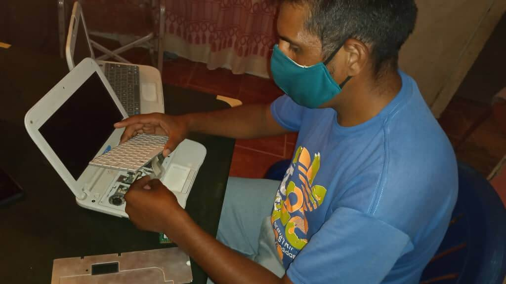
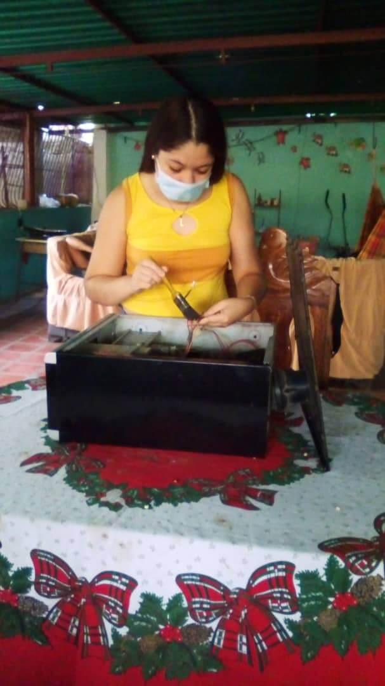
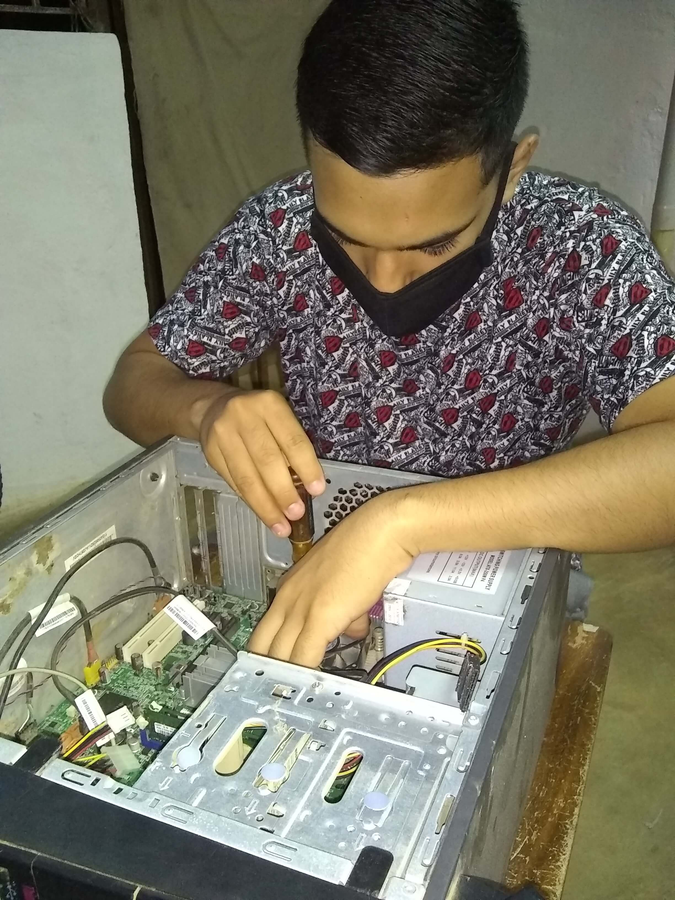
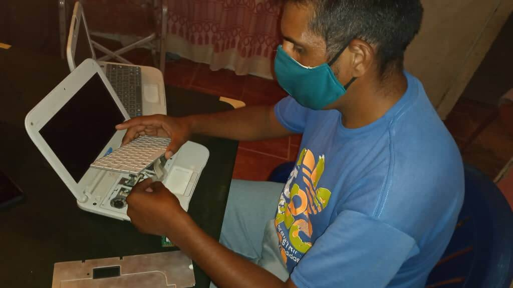
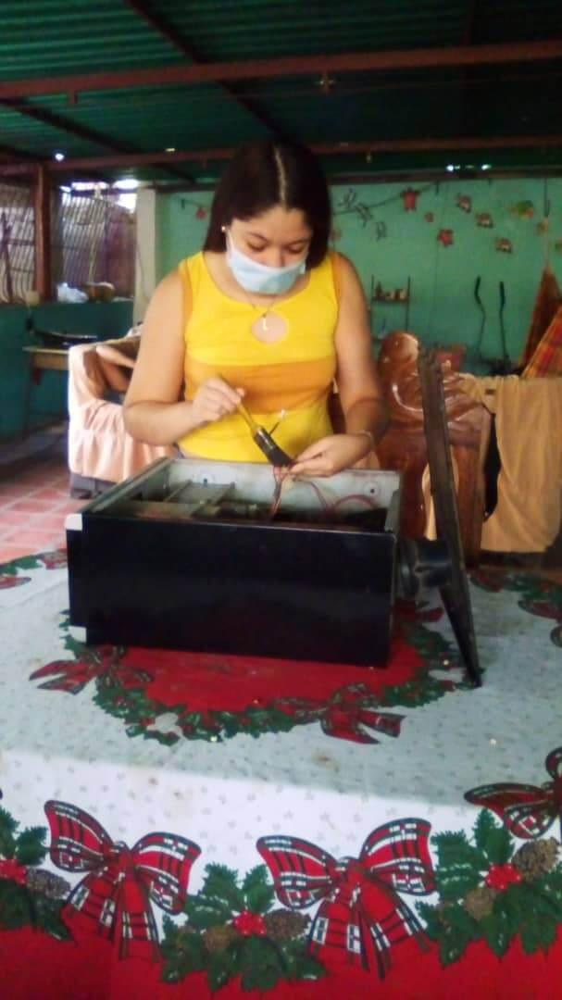
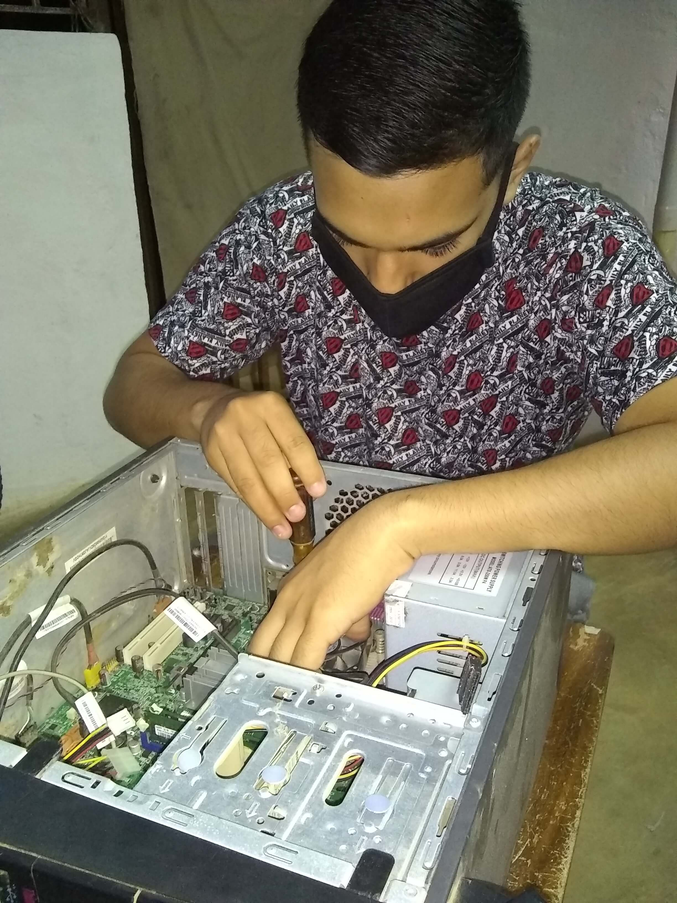

Juan Suárez
CI:27.826.071

¿Qué es el mantenimiento para PCs?
Es el cuidado que se le da a la computadora para prevenir posibles fallas, se debe tener en
cuenta la ubicación física del equipo ya sea en la oficina o en el hogar, así como los cuidados
especiales cuando no se está usando el equipo. Hay dos tipos de mantenimiento, el preventivo
y el correctivo.
Tipos de mantenimiento para la PC
Mantenimiento preventivo para PCs
El mantenimiento preventivo consiste en crear un ambiente favorable para el sistema y
conservar limpias todas las partes que componen una computadora. El mayor número de fallas
que presentan los equipos es por la acumulación de polvo en los componentes internos, ya que
éste actúa como aislante térmico.
El calor generado por los componentes no puede dispersarse adecuadamente porque es
atrapado en la capa de polvo.
Las partículas de grasa y aceite que pueda contener el aire del ambiente se mezclan con el
polvo, creando una espesa capa aislante que refleja el calor hacia los demás componentes, con
lo cual se reduce la vida útil del sistema en general.
Por otro lado, el polvo contiene elementos conductores que pueden generar cortocircuitos entre
las trayectorias de los circuitos impresos y tarjetas de periféricos.
Si se quiere prolongar la vida útil del equipo y hacer que permanezca libre de reparaciones por
muchos años se debe de realizar la limpieza con frecuencia.
Realizamos mantenimiento preventivo y correctivo de:
☑️ Computadoras.
✅ Laptops.
Entre las tareas realizadas con la comunidad se encuentran:
☑️ Programa de formacion comunal.
✅ Realizacion de pagina web de nuestro proyecto.
Agua Viva es un pequeño poblado ubicado a 9 kms de Barquisimeto (desde la redoma La Pastora). Es la capital de la parroquia Agua Viva que tiene una población de 16.443 habitantes; . allí tendrá la oportunidad de adquirir distintas especies de plantas en cualquiera de sus viveros, así como degustar fresas con crema y platos del menú criollo en sus variados restaurantes y clubes de montaña. Agua viva posee el corredor turístico y artesanal más importante del municipio Palavecino. En él se aprecia un agradable clima de montaña durante casi todos los días del año y es una muy buena opción para el hospedaje en posadas y el esparcimiento de propios y visitantes sobre todo durante los fines de semana. Sus habitantes dan forma a sus sueños, creencias e ilusiones transformando la arcilla, vidrio, papel y diversos tejidos en maravillosas creaciones dignas de un artista cautivador. Si lo que busca es disfrutar de la naturaleza, Agua Viva le ofrece el maravilloso parque nacional Terepaima, lugar donde se puede apreciar la naturaleza y diversos animales propios de la región. La entrada es libre y se puede hacer en vehículo o preferiblemente a pie.

 






CI:27.826.071
CI:19.299.809
CI:28.528.771
CI:28.127.735